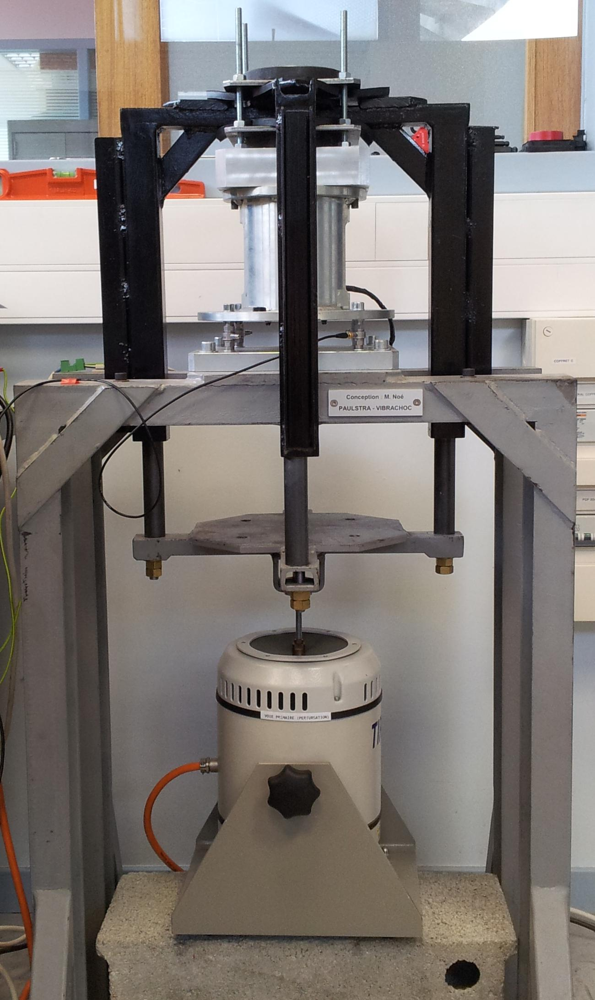
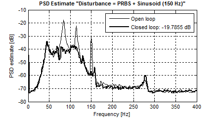
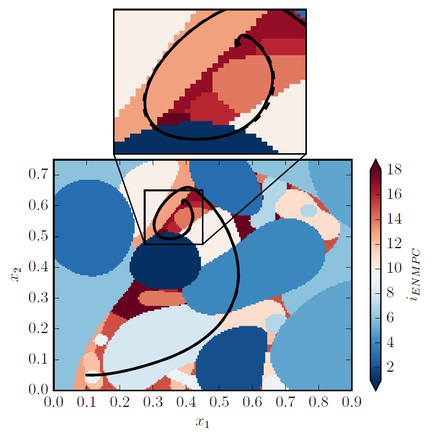
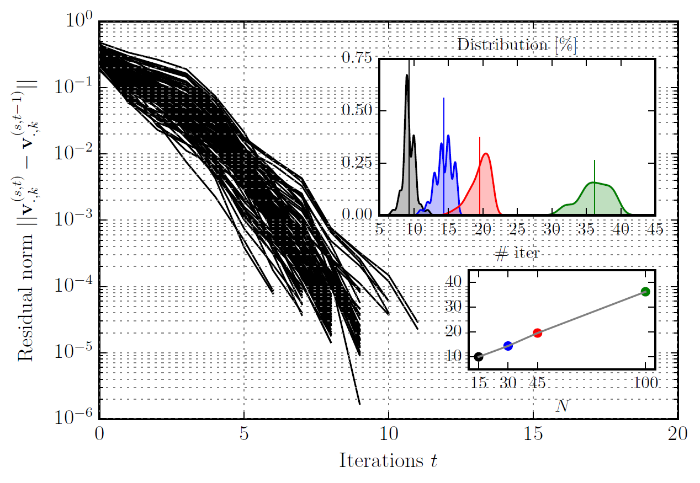
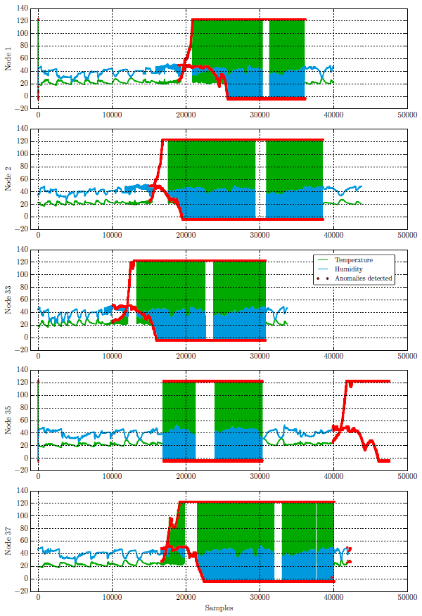

About me
I was a doctoral candidate in process control and optimization at Grenoble Images Parole Signal Automatique laboratoire (GIPSA-lab) and Commissariat à l’énergie atomique et aux énergies alternatives (CEA) within Service des Basses Températures (INAC-SBT).
I received engineer's degree from Hanoi University of Science and Technology (HUST) in 2012, followed by master's degree from Université Joseph Fourier (UJF) and Institut Polytechnique de Grenoble (Grenoble INP) in 2014, both in automation and control engineering.
I completed few MOOCs, including the training course CS50's Introduction to Computer Science (edX | Harvard University) and the professional certificate program TUM Lean Six Sigma Yellow Belt Certification (edX | Technische Universität München).
I am a numerical optimization, process control and machine learning enthusiast. I am also keen on industrial automation, computer programming and embedded applications.
Portoflio
Robust Active Vibration Control
Supervisors: Ioan D. Landau and Luc Dugard at Grenoble Images Parole Signal Automatique laboratoire (GIPSA-lab).
|  |
|  |
Innovative Advanced Control of Large Cryogenic Systems to Save Energy and Reduce Carbon Emission
Supervisors: Mazen Alamir and Patrick Bonnay at Commissariat à l’énergie atomique et aux énergies alternatives (CEA) within Service des Basses Températures (INAC-SBT), funded by Project ANR CRYOGREEN.
 |
Cryogenic refrigerator control problem
Proposed hierarchical distributed control framework
|
Compression station control problem
Proposed generic PLC-compatible control framework
|
Explicit nonlinear model predictive control
|  | Source code
|
Hierarchical distributed model predictive control
|  | Source code
|
Anomaly Detection of Time Series Data Using Machine Learning, Data Mining and Deep Learning
Collaborators: Phuc K. Tran, with other researchers in Vietnam, France and Belgium. (Project link)
 |
Anomaly detection in wireless sensor networks
|
|  | Source code
|
Cryptoasset Analytics and Quantitative Algorithmic Trading
Blockchain and exchange statistics
|
|
Chatbot
|
Cryptoasset valuation and price analysis
 |
Blog
|
Publications
V. V. Trinh, M. Alamir, P. Bonnay and F. Bonne, “Explicit model predictive control via nonlinear piecewise approximations,” in Proceedings of the 10th IFAC Symposium in Nonlinear Control Systems, Monterey, CA, USA, 2016.
[bibtex] [pdf] [slide]@inproceedings{trinh2016a, author = {V. V. Trinh and M. Alamir and P. Bonnay and F. Bonne}, title = {Explicit model predictive control via nonlinear piecewise approximations}, booktitle = {Proceedings of the 10th IFAC Symposium in Nonlinear Control Systems}, address = {Monterey, CA, USA}, year = {2016}, doi = {https://doi.org/10.1016/j.ifacol.2016.10.173} }M. Alamir, P. Bonnay, F. Bonne and V. V. Trinh, “Fixed-point based hierarchical MPC control design for a cryogenic refrigerator,” Journal of Process Control, vol. 58, no. Supplement C, pp. 117-130, 2017.
[bibtex] [pdf]@article{alamir2017a, author = {M. Alamir and P. Bonnay and F. Bonne and V. V. Trinh}, title = {Fixed-point based hierarchical MPC control design for a cryogenic refrigerator}, journal = {Journal of Process Control}, year = {2017}, volume = {58}, number = {Supplement C}, pages = {117--130}, doi = {https://doi.org/10.1016/j.jprocont.2017.09.006} }M. Alamir, V. V. Trinh and P. Bonnay, “On the stabilization of fixed-point iterations arising in hierarchical control design,” in Proceedings of the 20th IFAC World Congress, Toulouse, France, 2017.
[bibtex] [pdf]@inproceedings{alamir2017b, author = {M. Alamir and V. V. Trinh and P. Bonnay}, title = {On the stabilization of fixed-point iterations arising in hierarchical control design}, booktitle = {Proceedings of the 20th IFAC World Congress}, address = {Toulouse, France}, year = {2017}, doi = {https://doi.org/10.1016/j.ifacol.2017.08.1363} }V. V. Trinh, K. P. Tran and A. T. Mai, “Anomaly detection in wireless sensor networks via support vector data description with Mahalanobis kernels and discriminative adjustment,” in Proceedings of the 2017 4th NAFOSTED Conference on Information and Computer Science, Hanoi, Vietnam, 2017.
[bibtex] [pdf] [code]@inproceedings{trinh2017a, author = {V. V. Trinh and K. P. Tran and A. T. Mai}, title = {Anomaly detection in wireless sensor networks via support vector data description with Mahalanobis kernels and discriminative adjustment}, booktitle = {Proceedings of the 2017 4th NAFOSTED Conference on Information and Computer Science}, address = {Hanoi, Vietnam}, year = {2017}, doi = {https://doi.org/10.1109/NAFOSTED.2017.8108030} }V. V. Trinh, K. P. Tran and T. H. Truong, “Data driven hyperparameter optimization of one-class support vector machines for anomaly detection in wireless sensor networks,” in Proceedings of the 2017 International Conference on Advanced Technologies for Communications (ATC), Quy Nhon, Vietnam, 2017.
[bibtex] [pdf] [code]@inproceedings{trinh2017b, author = {V. V. Trinh and K. P. Tran and T. H. Truong}, title = {Data driven hyperparameter optimization of one-class support vector machines for anomaly detection in wireless sensor networks}, booktitle = {Proceedings of the 2017 International Conference on Advanced Technologies for Communications (ATC)}, address = {Quy Nhon, Vietnam}, year = {2017}, doi = {https://doi.org/10.1109/ATC.2017.8167642} }